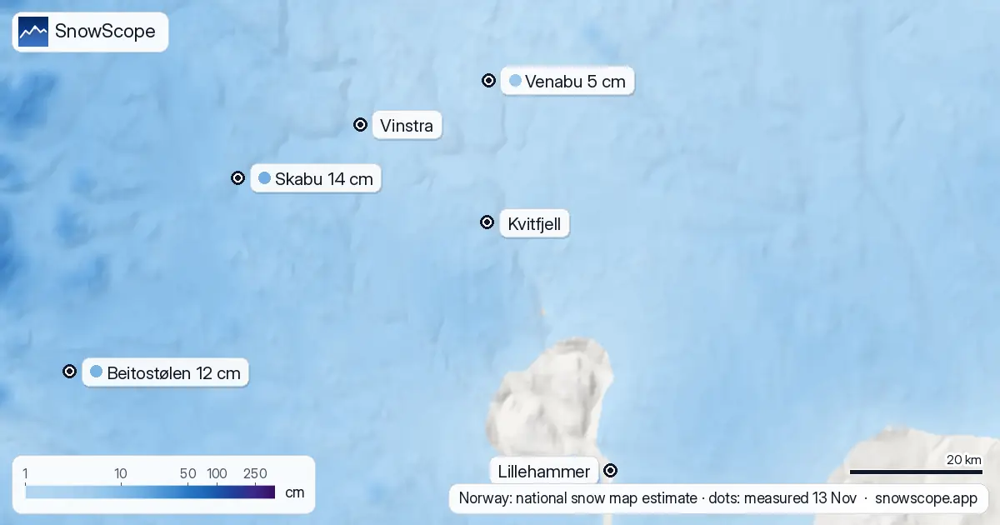

Kvitfjellin lumitilanne: ohut valkoinen kerros, normaaliin vielä matkaa (14. marraskuuta 2026)
Gudbrandsdalenin yllä kohoava syöksylaskumäki Kvitfjell on valkoinen, mutta niukin naukin. Norjan kansallinen lumikartta arvioi maassa olevan noin 5 cm lunta 1 118 metrissä, lähellä hissien yläpäätä, ja noin 3 cm alhaalla laakson pohjalla 184 metrissä. Vuorella ei ole julkista sääasemaa, joka mittaisi lumensyvyyttä joka päivä, joten luvut ovat arvioita eivätkä lukemia. Lähimmät lunta mittaavat asemat ovat lännen tuntureilla: 22 km:n päässä 930 metrissä sijaitsevalla Venabulla mitattiin aamulla 13. marraskuuta 5 cm ja 928 metrissä olevalla Skabulla 14 cm. 46 talven tilastoissamme tavallisena 14. marraskuuta huipulla on 27 cm, joten vuori on aikataulusta jäljessä.
Katso kohteen Kvitfjell lumiennuste reaaliajassa SnowScope-sovelluksessaLumensyvyys, puuterihälytykset ja 3D-kartta, ilmaiseksi.
Mitä rinteillä on tänään
Nykyinen lumi on satanut pieninä erinä: arviomme viimeiseltä seitsemältä päivältä on noin 3,5 cm huipulle ja alle 2 cm alaosaan. Se riittää saamaan metsän näyttämään E6-tieltä talviselta, mutta ei peittämään kanervaa ja kiviä hoitamattomalla rinteellä.
Kansallinen kartta näyttää lähes saman ohuen kerroksen 577 metristä huipulle asti. Alaosan ja huipun ero on juuri nyt pieni, mikä on epätavallista mäellä, jonka korkeusero on 854 m. Normaalivuonna huippu on marraskuun puolivälissä selvästi edellä.

Tuleva viikko: ylhäällä lunta, alhaalla vettä
Odotamme seuraavien seitsemän päivän aikana noin 10 cm huipulle (1 038 m) ja 9 cm rinteen keskivaiheille (611 m), ja alaosaan lähes ei mitään. Muut vertailemamme ennusteet ovat ylhäällä hieman anteliaampia, 14–37 cm, joten lukuamme kannattaa pitää varovaisena.
Alaosassa yli puolet näiden ennusteiden sademäärästä tulee vetenä, ja lumiraja on jossain 290 ja 480 metrin välillä. Selvästi sanottuna: Kvitfjellin yläpuoliskon pitäisi valkoistua, alaosa pysyy märkänä.
Miltä normaali myöhäissyksy täällä näyttää
46 mennyttä talveamme antavat huipun tavalliseksi lumensyvyydeksi 27 cm 14. marraskuuta, 44 cm 30. marraskuuta ja 54 cm 15. joulukuuta. Joka kymmenes talvi huipulla on 14. marraskuuta vain 6 cm, joten ohut alku ei ole harvinainen. Alaosassa tavallinen syvyys 14. marraskuuta on 17 cm, mutta joka viides talvi siellä ei ole sinä päivänä lainkaan lunta.
Keskimääräisenä talvena pysyvä lumi tulee huipulle noin 10. lokakuuta ja alaosaan noin 20. lokakuuta. Sen jälkeen huippu pysyy valkoisena noin 218 päivää. Lumensyvyyden kannalta parhaat viikot tulevat myöhään: maaliskuun jälkipuoliskolla huipulla on yleensä noin 93 cm.
Onko Kvitfjell auki?
Ei vielä. Kvitfjellin oman kauden alku -sivun mukaan hiihtoalue avautuu 27. marraskuuta, kahden viikon päästä. Lumiraporttisivulta voi seurata lumen kertymistä.
Vinkkejä laskijoille
- Kun maassa on 5 cm, randonnée tai kävely valmisteltujen rinteiden ulkopuolella tarkoittaa kiviä lumen alla. Odota kunnon pohjaa.
- Gudbrandsdalenin tiet ovat tällä viikolla alhaalla märkiä ja ylempänä liukkaita: talvirenkaat ovat välttämättömät.
- Tarkista hissit ja rinteiden kunnostus keskuksen omalta sivulta ennen lähtöä; tilanne muuttuu tähän aikaan vuodesta nopeasti.
Lisää karttoja (ulkoiset sivustot)
Lähteet ja tekijät
- seNorge, Norjan kansallinen lumikartta (NVE ja MET Norway), avoin data NLOD-lisenssillä www.senorge.no/
- Kvitfjell, virallinen sivusto: avauspäivät ja hissitilanne, luettu 13.11.2026 www.alpinco.com/no/kvitfjell/sesongstart
- Kvitfjell, lumiraportti (virallinen) www.alpinco.com/no/kvitfjell/snorapport
- Varsom, Norjan lumivyöryvaroitukset www.varsom.no/
- MET Norway, asemahavainnot (CC BY 4.0), päivittäiset raportit Ogimetin julkaisemina www.ogimet.com/
Näistä luvuista
Mitattu lumi: aamulukemat 13. marraskuuta 2026 Ruotsin (SMHI:n avoin data), Suomen (Ilmatieteen laitoksen avoin data, CC BY 4.0) ja Norjan (MET Norwayn asemaraportit, CC BY 4.0, julkaisija Ogimet) virallisilta sääasemilta. Norjan kansallinen lumikartta seNorge (NVE ja MET Norway, NLOD) antaa rinteille arviot 1 km:n ruudukossa. Omat lukumme: SnowScopen ennuste seuraaville seitsemälle päivälle hiihtokeskuksen kolmella korkeudella, verrattuna riippumattomiin ennusteisiin (ECMWF, ICON, GFS, GEM) ajalle 14.–20. marraskuuta; 46 menneen talven lumihistoria (1980-81–2025-26), korkeuden mukaan korjattu menneisyyden malli. Avauspäivät: hiihtokeskusten omat sivut, luettu 13.11.2026. Rinteiden pituus ja hissien määrä: OpenSkiMap-kartoitus.
Viralliset lumivyöryennusteet: Varsom (NVE)
Viittaa tähän raporttiin
Tutkimukseen, opetukseen tai mediaan: luvut ja kaaviot ovat vapaasti käytettävissä CC BY 4.0 -lisenssillä tällä lähdeviitteellä.
SnowScope (2026), Kvitfjellin lumitilanne: ohut valkoinen kerros, normaaliin vielä matkaa (14. marraskuuta 2026), https://snowscope.app/blog/fi/2026/11/kvitfjell-snow-conditions-14-november-2026.html, luettu 2026-11-14
SnowScope (Atlas Labs). (2026, November 14). Kvitfjellin lumitilanne: ohut valkoinen kerros, normaaliin vielä matkaa (14. marraskuuta 2026). SnowScope snow reports. https://snowscope.app/blog/fi/2026/11/kvitfjell-snow-conditions-14-november-2026.html
BibTeX
@misc{snowscope2026kvitfjellsnowconditions1,
author = {{SnowScope (Atlas Labs)}},
title = {Kvitfjellin lumitilanne: ohut valkoinen kerros, normaaliin vielä matkaa (14. marraskuuta 2026)},
year = {2026},
month = nov,
howpublished = {\url{https://snowscope.app/blog/fi/2026/11/kvitfjell-snow-conditions-14-november-2026.html}},
note = {Published 2026-11-14 13:09 UTC; accessed 2026-11-14}
}· CC BY 4.0 · Menetelmät, data ja työkalut →
Kvitfjell: lumi ja lämpötila korkeuden mukaan, tämä talvi ja viime talvi (työkalut) →
Seuraa: Kvitfjell
Ilmainen: viesti, kun uutta lunta on tulossa, ja ennuste joka aamu.
Lisää lumiraportteja

Mitattu lumensyvyys Oslossa 13. marraskuuta 2026: Blindernissä 4 cm, Bjørnholtissa 31 cm ja Tryvannshøgdalla 37 cm. Miltä tavallinen marraskuun puoliväli näyttää ja mitä viikonloppu tekee lumelle.

Oslon koiranomistajat, 13. marraskuuta 2026: Blindernissä 4 cm lunta, Bjørnholtissa 31 cm ja Tryvannshøgdalla 37 cm. Missä koira saa juosta vapaana, mitä kytkentäsäännöt sanovat marraskuussa, ja kylmä, kuiva lauantai.

Maassa mitattu lumi 13. marraskuuta 2026 Oslossa, Bergenissä, Trondheimissa, Tromssassa, Tukholmassa, Göteborgissa, Östersundissa, Uumajassa, Luulajassa, Kiirunassa, Helsingissä, Tampereella, Oulussa ja Rovaniemellä: Uumajan 20 sentistä Kiirunan paljaaseen maahan.